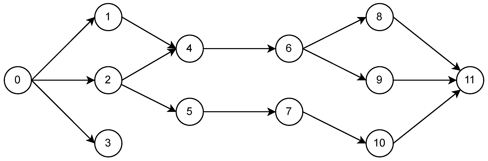

Getting Started¤
Connex is a JAX library built on Equinox for trainable neural networks whose topology is defined by a directed acyclic graph.
With Connex, you can:
- turn any directed acyclic graph (DAG) into a trainable Equinox module;
- add and remove individual edges and neurons while preserving compatible parameters;
- set global or per-node dropout probabilities with explicit JAX random keys;
- compose built-in or user-defined graph operations;
- choose padded, sparse, matmul, or hybrid affine backends;
- export a trained model to a NetworkX weighted digraph for graph analysis.
Installation¤
pip install connex
A Small DAG¤
As a pedagogical example, consider the following graph:

The model has input node 0 and output nodes 3 and 11, in that order. The
output order matters: Connex returns output values in the same order specified
in the graph specification.
import connex as cnx
import jax
import jax.numpy as jnp
import jax.random as jr
graph = {
0: [1, 2, 3],
1: [4],
2: [4, 5],
4: [6],
5: [7],
6: [8, 9],
7: [10],
8: [11],
9: [11],
10: [11],
}
spec = cnx.GraphSpec(graph, inputs=[0], outputs=[3, 11])
model = cnx.NeuralDAG(
spec,
ops=cnx.ops.default_ops(activation=jax.nn.relu),
key=jr.key(0),
)
y = model(jnp.array([1.0]))
GraphSpec validates the graph before any parameters are created. The graph
must be acyclic, input nodes may not have incoming edges, output nodes may not
have outgoing edges, and the optional topo_sort must respect every edge.
Training¤
NeuralDAG is an equinox.Module, so it works with normal Equinox filtering,
JAX transformations, and Optax optimizers. Use model.batched(x) when each
example in a batch can share the same runtime state. Use jax.vmap(model) when
you need distinct stochastic state per example, such as independent dropout
keys.
import equinox as eqx
import optax
optim = optax.adam(1e-3)
opt_state = optim.init(eqx.filter(model, eqx.is_array))
@eqx.filter_value_and_grad
def loss_fn(model, x, y):
preds = model.batched(x)
return jnp.mean((preds - y) ** 2)
@eqx.filter_jit
def step(model, opt_state, x, y):
loss, grads = loss_fn(model, x, y)
updates, opt_state = optim.update(grads, opt_state, model)
model = eqx.apply_updates(model, updates)
return model, opt_state, loss
x = jnp.expand_dims(jnp.linspace(0, 2 * jnp.pi, 250), 1)
y = jnp.hstack((jnp.cos(x), jnp.sin(x)))
for _ in range(500):
model, opt_state, loss = step(model, opt_state, x, y)
Dropout¤
Dropout is explicit-key only. If any dropout probability is nonzero, pass a key to each forward call. A scalar dropout probability applies to hidden nodes. A mapping can target any node, including inputs and outputs.
spec = cnx.GraphSpec(graph, inputs=[0], outputs=[3, 11], dropout=0.1)
model = cnx.NeuralDAG(spec, key=jr.key(0))
y = model(jnp.array([1.0]), key=jr.key(1))
For independent masks per batch element, split the key and map over both inputs and keys:
keys = jr.split(jr.key(1), x.shape[0])
preds = jax.vmap(lambda x_i, key_i: model(x_i, key=key_i))(x, keys)
Editing Topology¤
Topology edits go through connex.edit(model). The editor mutates a pending
graph description, and build(...) returns a new NeuralDAG. The original
model is left unchanged. Compatible parameters are transferred by label: nodes
and edges that still exist keep their trained values, while new structure is
initialized from the supplied key.
model = (
cnx.edit(model)
.add_edges([(1, 6), (2, 11)])
.remove_nodes([9])
.set_dropout(0.1)
.build(key=jr.key(2))
)
Editors can add or remove edges, add input/hidden/output nodes, remove nodes,
and update dropout. The resulting graph is validated by GraphSpec, so edits
that introduce cycles or invalid input/output nodes fail before a model is
returned.
Operation Pipelines¤
Connex models are composed from operation objects. The default stack is:
- an affine op, usually
HybridEdgeAffine; - an activation op;
- dropout;
- an output transform.
The hybrid affine backend chooses a representation per compiled topological batch:
- padded predecessor rows for compact batches;
- sparse edge accumulation when padding dominates;
- dense matmul for wide complete predecessor batches.
Long one-input chain segments use an automatic jax.lax.scan execution plan
when the operation stack supports it. Scan segments only write graph outputs
and nodes consumed outside the segment back into the model value buffer.
You can force a backend for benchmarking or for a known graph family:
model = cnx.NeuralDAG(
spec,
ops=cnx.ops.default_ops(affine="sparse", activation=jax.nn.relu),
key=jr.key(0),
)
Custom Operations¤
Subclass connex.ops.Op to add custom graph behavior. Operations receive a
ForwardContext containing the current topological batch, already-gathered
inputs, edge-position metadata, and the full value buffer. An operation can
transform inputs, produce outputs, or participate in parameter transfer.
from dataclasses import replace
class ScaleOutputs(cnx.ops.Op):
scale: jax.Array
def apply(self, ctx, *, state=None, key=None):
assert ctx.outputs is not None
return replace(ctx, outputs=ctx.outputs * self.scale)
Custom operations intentionally use the generic topological batch path. The scan execution path is reserved for built-in affine/activation/dropout stacks whose semantics Connex can prove locally.
Prebuilt Graphs¤
Prebuilt graph constructors live under connex.nn:
mlp = cnx.nn.MLP(2, 1, width=32, depth=3, key=jr.key(0))
dense = cnx.nn.DenseMLP(2, 1, width=32, depth=3, key=jr.key(1))
These are regular NeuralDAG instances with generated GraphSpec objects, so
they can be edited, trained, exported, and composed with custom operations like
any other model.
Citation¤
@software{gleyzer2023connex,
author = {Leonard Gleyzer},
title = {{C}onnex: Fine-grained Control over Neural Network Topology in {JAX}},
url = {http://github.com/leonard-gleyzer/connex},
year = {2023},
}